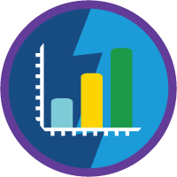
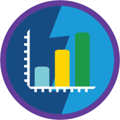

How Often...
How often do patients get a condition after starting a drug?
Which drug are you interested in?
Which condition are you interested in?
What this does
Use this tool to look up the proportion of people starting a drug who are newly diagnosed with a condition within 1 year of starting the drug. You can search for a specific drug-condition incidence by entering your drug and condition of interest in the fields above. Or, you can browse a list of conditions of potential interest by leaving the condition field blank, and you'll be shown conditions listed on the drug's product label.
What this does not do
This tool does not demonstrate that a drug causes a condition (i.e., that the condition is a side effect of the drug). Instead, for example, the condition may be part of the reason you are taking the drug, or the condition may just be common in the population.